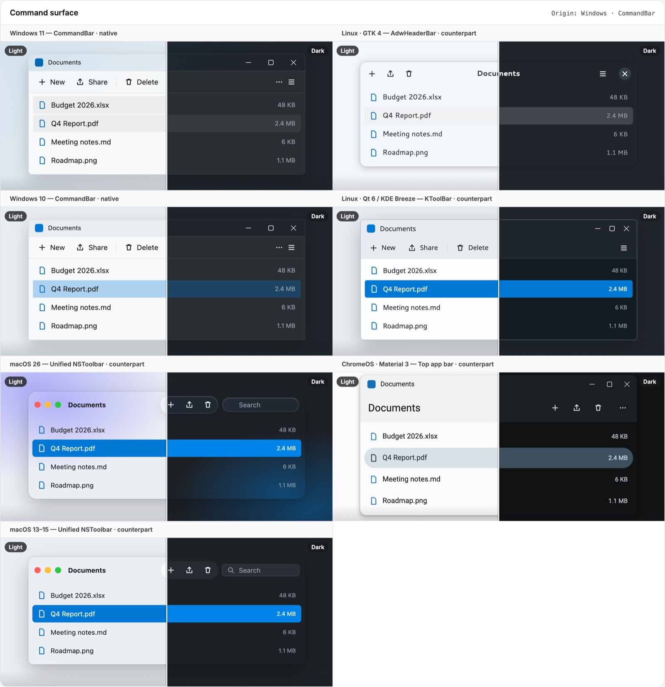
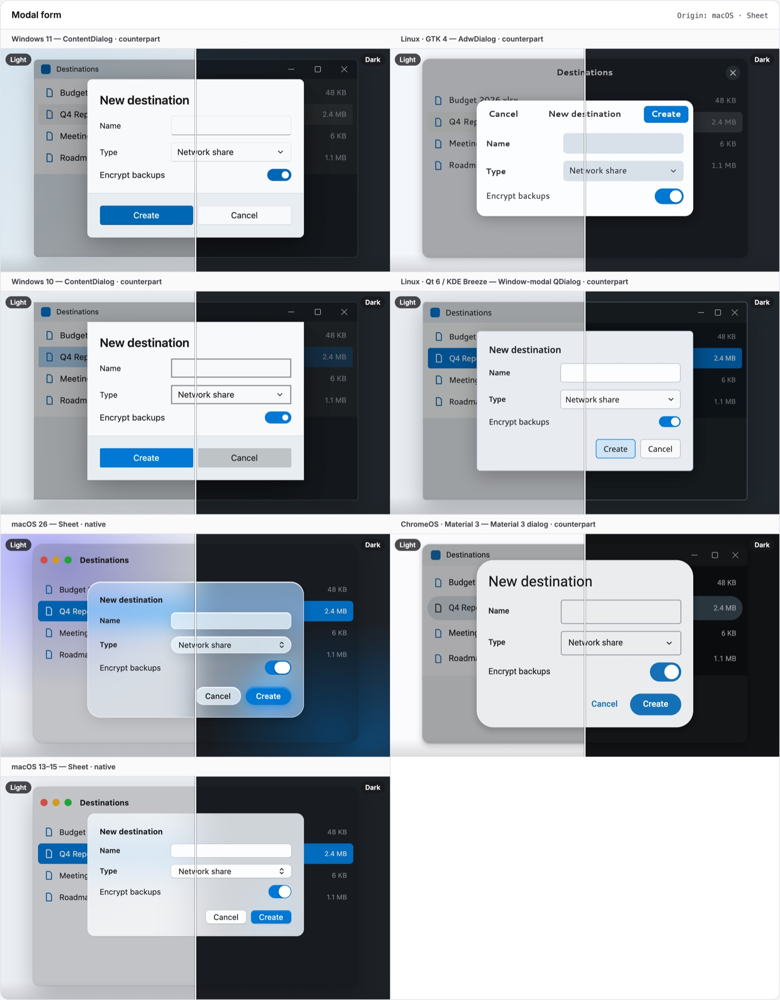
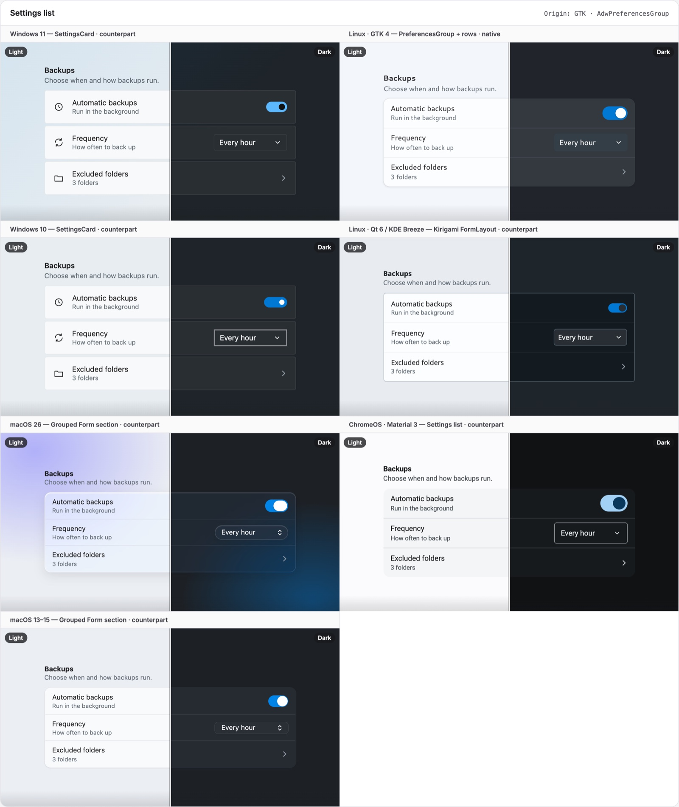
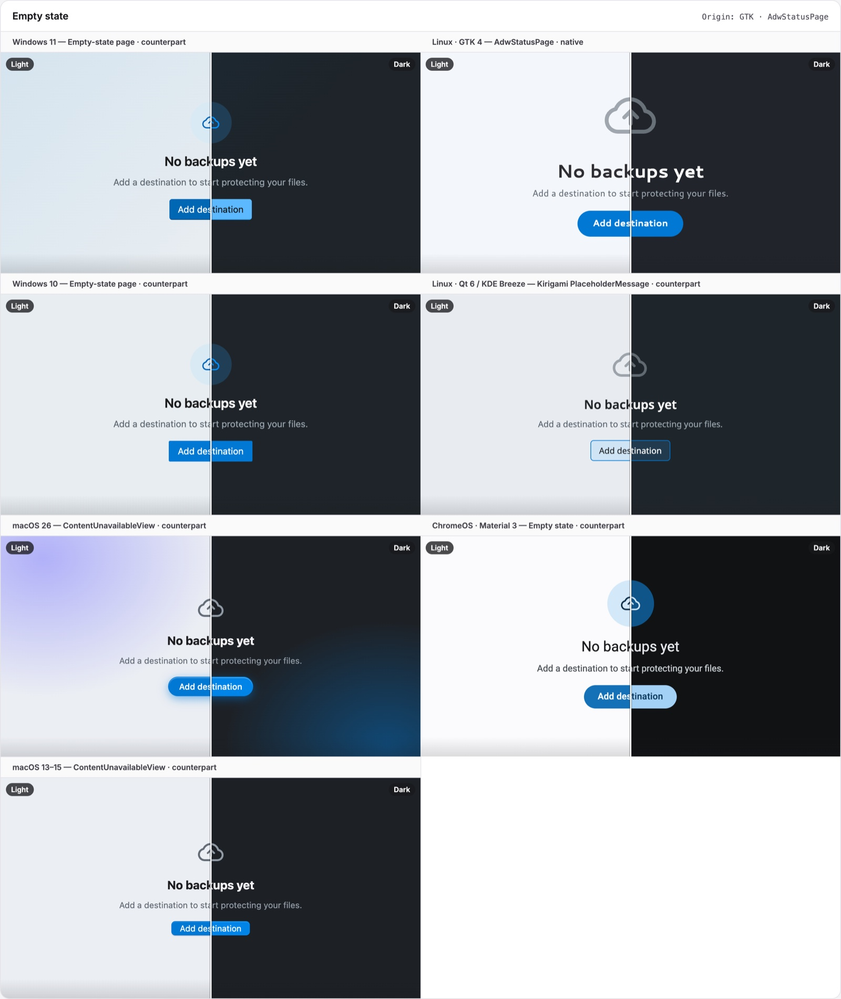
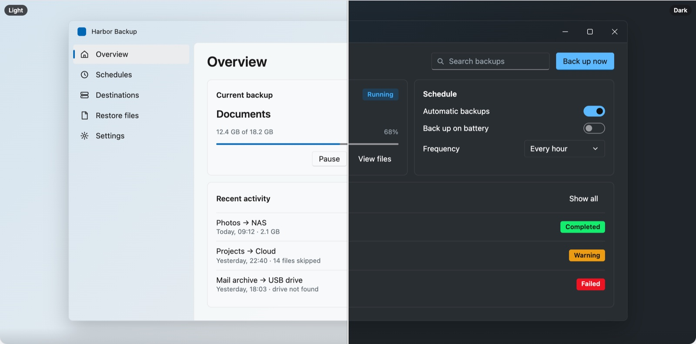
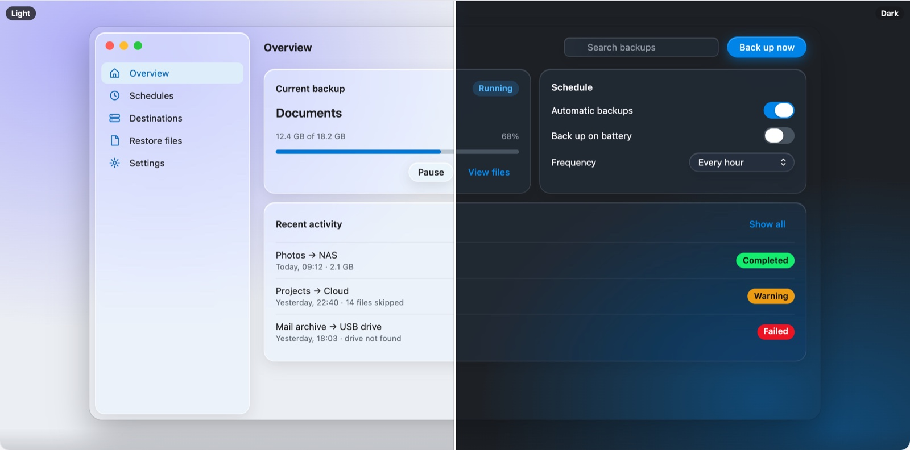

Desktop UI.
The pieces stock spartan doesn't have: window chrome and the patterns each OS is known for. Each component changes its layout per OS, not just its colors, and follows the skin live.
npm install @spartan-native/desktop-uiimport { SnDesktopUiImports } from '@spartan-native/desktop-ui';
@Component({
imports: [SnDesktopUiImports], // or just what you use
})Borrow the best of each OS.
Draw it natively on all of them.
Two signature patterns from each OS family, each built once. It renders the native form on its home OS and the closest equivalent everywhere else.
Command surface
<sn-command-bar>: CommandBar · NSToolbar · AdwHeaderBar · KToolBar · top app bar
Coach mark
<sn-coach-mark>: TeachingTip · NSPopover · GtkPopover · Kirigami popup · rich tooltip
Modal form
<sn-modal-sheet>: ContentDialog · Sheet · AdwDialog · window-modal QDialog · M3
dialog
Detail side panel
<sn-inspector>: SplitView pane · Inspector · AdwOverlaySplitView · Dolphin panel ·
side sheet
Settings list
<sn-settings-group>: SettingsCard · grouped Form · PreferencesGroup · Kirigami
FormLayout · M3 list
Empty state
<sn-status-page>: empty state · ContentUnavailableView · AdwStatusPage ·
PlaceholderMessage · M3




<sn-settings-group title="Backups" description="Choose when and how backups run.">
<sn-settings-row title="Automatic backups" subtitle="Run in the background">
<ng-icon snSettingsIcon name="lucideClock" />
<hlm-switch [checked]="true" aria-label="Automatic backups" />
</sn-settings-row>
</sn-settings-group>
<sn-status-page icon="lucideArchive" title="No backups yet"
description="Add a destination to start protecting your files.">
<button hlmBtn>Add destination</button>
</sn-status-page>A title bar that knows where it is.
Caption buttons on Windows, traffic lights on macOS, a header bar on GNOME, Breeze on KDE, round M3 buttons on ChromeOS.
-
Drag regions for Electron and Chromium (
app-region), Wails and Tauri; its buttons are excluded -
windowControls="native"leaves room for buttons the OS draws itself:titleBarOverlayor Window Controls Overlay - Inactive window: the chrome dims, and the macOS lights turn grey
- Status bar: Explorer · Finder · GtkActionBar · Dolphin · M3 footer, with opt-in live announcements
<sn-title-bar title="Harbor Backup" subtitle="Office NAS"
(close)="host.close()"
(minimize)="host.minimize()">
<img snTitleBarIcon src="icon.svg" alt="" />
<button snTitleBarEnd hlmBtn variant="ghost"
size="icon-sm" aria-label="Search">…</button>
</sn-title-bar>
<sn-inspector-layout>
<sn-sidebar-nav>…</sn-sidebar-nav>
<main>…</main>
<sn-inspector>…</sn-inspector>
</sn-inspector-layout>
<sn-status-bar>
<span snStatusItem>4 items, 1 selected</span>
</sn-status-bar>

The desktop controls spartan lacks.
Their parts carry the theme's button and field hooks, so each skin draws them with its own button and field styles, every state included.
Split button
<sn-split-button>: Fluent SplitButton · NSComboButton · AdwSplitButton · QToolButton
· M3
Number box
<sn-number-box>: NumberBox with math input · NSStepper · GtkSpinButton · QSpinBox. A
ControlValueAccessor.
Tree view
<sn-tree>: TreeView · NSOutlineView · GtkTreeExpander · QTreeView, with helm's
selection model over the visible items.
⌘ on a Mac. Ctrl everywhere else.
Write shortcuts once in a portable notation. snShortcut writes the glyphs for the
real OS, not the skin, and *snPlatformIf renders per skin or OS family.
<kbd snShortcut="mod+shift+s"></kbd>
<div *snPlatformIf="'macos'; else other">…</div>
<ng-template #other>…</ng-template>Every component, every OS.
Bold marks the OS a pattern comes from. Each component has a Storybook docs page with live examples, the full API and accessibility notes.
| Component | Windows 11 / 10 | macOS 26 / 13–15 | GNOME | KDE Plasma | ChromeOS |
|---|---|---|---|---|---|
<sn-title-bar> |
icon + title left, caption buttons right | traffic lights left, title centered | header bar, bold centered title | Breeze title bar | caption bar, round buttons |
<sn-window-controls> |
– □ × (close turns red) | ● ● ● (grey when inactive) | round × | Breeze glyph buttons | M3 round caption buttons |
<sn-status-bar> |
Explorer status bar | Finder status bar, centered | GtkActionBar | Dolphin status bar | slim M3 footer |
<sn-command-bar> |
CommandBar | unified NSToolbar | AdwHeaderBar | KToolBar | top app bar |
<sn-coach-mark> |
TeachingTip | NSPopover | GtkPopover | Kirigami popup | rich tooltip |
<sn-modal-sheet> |
ContentDialog | sheet from the title bar | AdwDialog, buttons in the header bar | window-modal dialog | M3 dialog |
<sn-assistant> |
wizard: Step n of m | Setup Assistant page | pages with a header bar and dots | QWizard with the step list | M3 flow with dots |
[snTooltip] |
Fluent ToolTip card | help tag | inverse bubble | framed tooltip | M3 plain tooltip |
<sn-inspector> |
SplitView pane | Inspector | AdwOverlaySplitView | Dolphin information panel | side sheet |
<sn-sidebar-nav> |
accent pill (10: 4px bar) | accent fill, grey when inactive | neutral rounded selection | accent-filled selection | tonal pill |
<sn-settings-group> |
SettingsCards | grouped Form section | AdwPreferencesGroup | Kirigami FormLayout | settings list in a tonal card |
<sn-status-page> |
Fluent empty state | ContentUnavailableView | AdwStatusPage | PlaceholderMessage | M3 empty state |
<sn-menubar> |
in-window menu bar | global menu bar with a native host | in-window menu bar | in-window menu bar | in-window menu bar |
<sn-split-button> |
Fluent SplitButton | NSComboButton (split) | AdwSplitButton | QToolButton MenuButtonPopup | M3 split button |
<sn-number-box> |
NumberBox, inline ∧ ∨ | field + NSStepper | GtkSpinButton − + | QSpinBox, stacked arrows | M3 field with − + |
<sn-tree> |
TreeView, chevrons, accent pill | NSOutlineView, triangles | GtkTreeExpander list | Breeze QTreeView | Files app tree |
<sn-checklist> |
numbered setup tasks that tick off, the same on every skin (accent tick) | ||||
Depends on @spartan-native/theme, @spartan-native/helm, @angular/cdk,
@angular/forms and @ng-icons/core. Window effects and Snap Layouts through the
host are next.